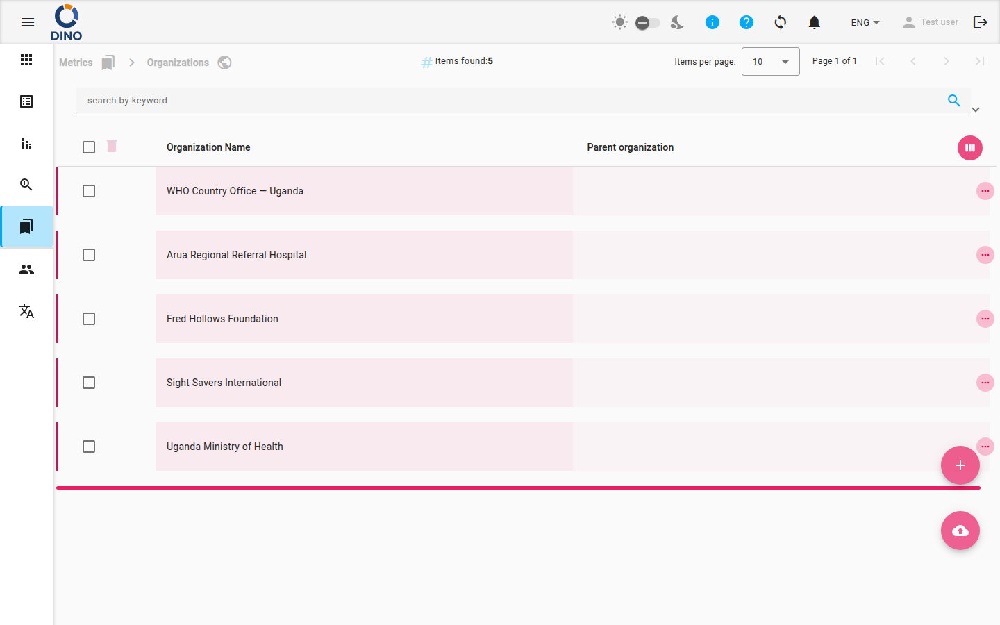

المؤسسات
تعرض صفحة المؤسسات جميع المؤسسات التي تم تكوينها في نسخة Dino الخاصة بك. استخدم هذه الشاشة لعرض وإضافة وتحرير وحذف واستيراد المؤسسات، بالإضافة إلى إدارة التسلسل الهرمي للمؤسسات.

أعمدة الجدول
بشكل افتراضي، يعرض الجدول الأعمدة التالية:
- اسم المؤسسة – اسم المؤسسة. يمكن فرز هذا العمود.
- المؤسسة الأم – اسم المؤسسة الأم، إن وجدت.
الأعمدة الإضافية (المعرف، تاريخ الإنشاء، مسار الشعار، رابط الموقع الإلكتروني، السمات الإضافية) مخفية ولكنها متاحة عند تخصيص عرض العمود باستخدام أيقونة عرض الأسبوع (أسفل يمين رأس الجدول).
إجراءات الصف
يحتوي كل صف على ثلاثة إجراءات يمكن الوصول إليها بالنقر على زر المزيد (ثلاث نقاط) بجوار الصف:
- عرض (أيقونة العين) – يفتح مربع حوار للقراءة فقط مع تفاصيل المؤسسة.
- تحرير (أيقونة القلم) – يفتح مربع حوار لتعديل تفاصيل المؤسسة.
- حذف (أيقونة سلة المهملات) – يحذف المؤسسة بشكل دائم. يظهر مربع حوار تأكيد قبل الحذف.
احذر عند حذف المؤسسات
لا يمكن التراجع عن حذف مؤسسة. تأكد من عدم وجود حالات نشطة أو نماذج تعتمد عليها قبل الإزالة.
يمكنك أيضًا النقر مباشرة على صف لتحديده (للإجراءات المجمعة) أو توسيعه لرؤية تفاصيل إضافية مضمنة.
الإجراءات المجمعة وعوامل التصفية
حدد عدة صفوف باستخدام مربعات الاختيار في العمود الأول، ثم استخدم أزرار الحذف المجمع أو التحرير المجمع التي تظهر في شريط الأدوات.
البحث وعوامل التصفية
يقدم شريط التصفية في أعلى الصفحة:
- بحث بالكلمات المفتاحية – تصفية المؤسسات حسب أي نص.
- نطاق التاريخ – تصفية حسب نطاق تاريخ الإنشاء.
- مدير الإعدادات المسبقة – حفظ وتحميل إعدادات مسبقة لتصفية البحث.
- تصدير – تنزيل القائمة المصفاة كملف.
انقر على زر تصفية لفتح عوامل تصفية متقدمة للتحكم الدقيق.
إضافة واستيراد المؤسسات
يوجد زرين عائمين للإجراءات دائمًا في الزاوية اليمنى السفلية:
- إضافة جديد (أيقونة علامة الجمع) – يفتح مربع حوار لإنشاء مؤسسة جديدة. سيُطلب منك إدخال اسم المؤسسة، المؤسسة الأم، رابط الموقع الإلكتروني، وتفاصيل أخرى.
- استيراد (أيقونة تحميل سحابي) – يتيح لك تحميل ملف (CSV أو JSON أو XML) لاستيراد المؤسسات بكميات كبيرة. اتبع التعليمات التي تظهر على الشاشة لربط الحقول.
التدويل
يمكن ترجمة أسماء المؤسسات والتسميات إذا كانت نسخة Dino الخاصة بك تدعم لغات متعددة. راجع اللغات للحصول على التفاصيل.
الخطوات: إنشاء مؤسسة جديدة
- انقر على الزر العائم إضافة جديد.
- في مربع الحوار الذي يفتح، املأ الحقول المطلوبة (اسم المؤسسة وسمة واحدة على الأقل).
- اختياريًا، حدد مؤسسة أم لإنشاء تسلسل هرمي.
- انقر على حفظ. تظهر المؤسسة الجديدة فورًا في القائمة.
الخطوات: تصدير المؤسسات
- طبق أي عوامل تصفية تحتاجها في شريط البحث.
- انقر على زر تصدير (أيقونة تنزيل سحابي) في شريط التصفية.
- اختر تنسيق التصدير (CSV، Excel، إلخ) وأكد.
- يتم تنزيل الملف إلى جهازك.
الصفحات ذات الصلة
- نظرة عامة على المقاييس – جميع صفحات إدارة المقاييس.
- المجالات الموضوعية – إدارة المجالات الموضوعية للمؤسسات.
- الحالات – ربط الحالات بالمؤسسات.
- المواقع – ربط المواقع بالمؤسسات.
- المشاريع – ربط المؤسسات بالمشاريع.